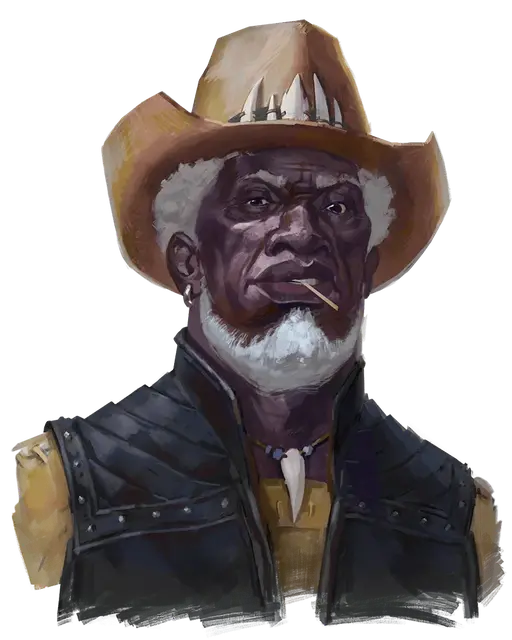

Дон-Джон Раскин
Don-Jon Raskin
Средний Гуманоид (Человек), нейтральный, именной НИП

Класс Доспеха 10
Хиты 44 (8к8 + 8)
Скорость 30 футов
| мод | спас | ||
|---|---|---|---|
| СИЛ | 11 | +0 | +0 |
| ЛОВ | 10 | +0 | +2 |
| ТЕЛ | 13 | +1 | +3 |
| мод | спас | ||
|---|---|---|---|
| ИНТ | 12 | +1 | +1 |
| МДР | 10 | +0 | +0 |
| ХАР | 14 | +2 | +2 |
Навыки Обман +4, Убеждение +4
Языки Общий, Дварфийский
Опасность 1/2 (100 опыта)
Бонус мастерства +2
Особенности
Храбрый. Дон-Джон совершает с преимуществом спасброски от испуга.
Ещё живой (перезаряжается после продолжительного отдыха). Если урон уменьшает хиты Дон-Джона до 0, вместо этого они опускаются до 1 хита и Дон-Джон получает преимущество на броски атак до конца своего следующего хода.
Действия
Мультиатака. Дон-Джон совершает три рукопашные атаки.
Кинжал. . Рукопашная или Дальнобойная атака оружием: +2 к попаданию, досягаемость 5 футов или дистанция 20/60 футов, одна цель. Попадание: 2 (1к4) колющего урона.
Праща. . Дальнобойная атака оружием: +2 к попаданию, дистанция 30/120 футов, одна цель. Попадание: 2 (1к4) дробящего урона.
Описание
Авантюристы, принявшие задание на Руднике Золотая Пята, встречают Дон-Джона Раскина, бесстрашного специалиста по устранению проблем, прошедшего через изрядную долю приключений.